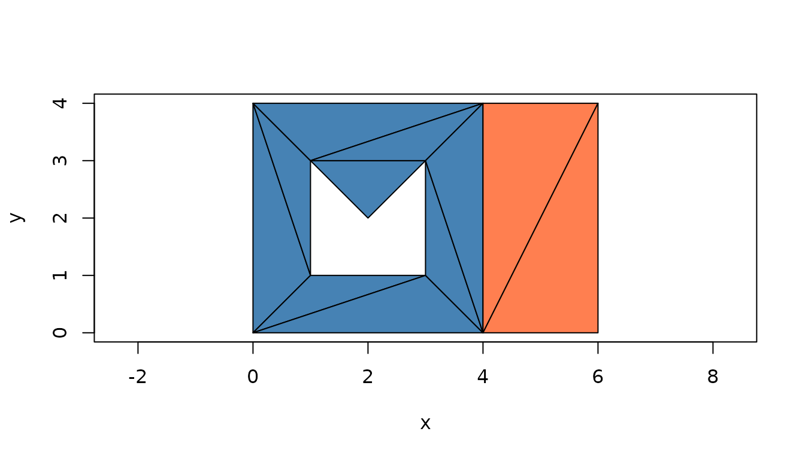
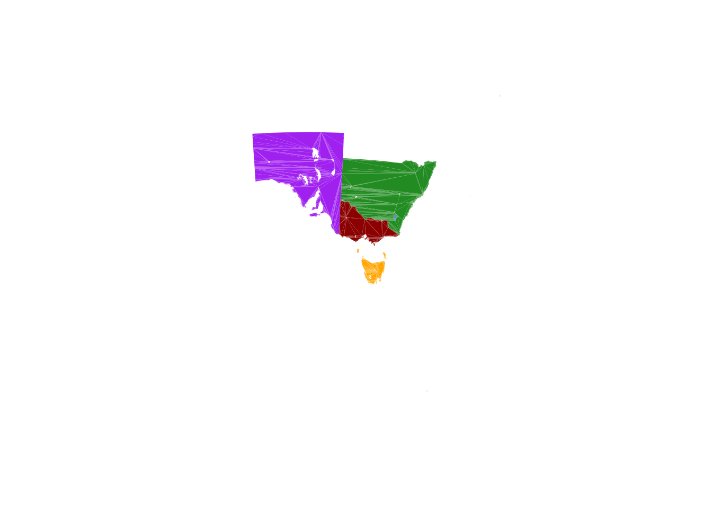
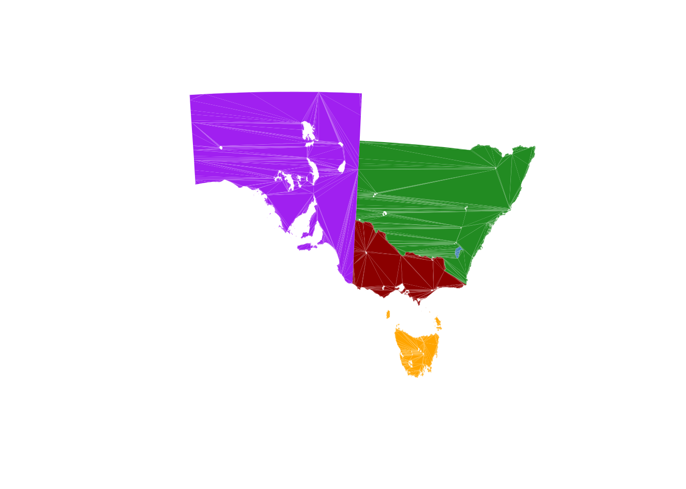
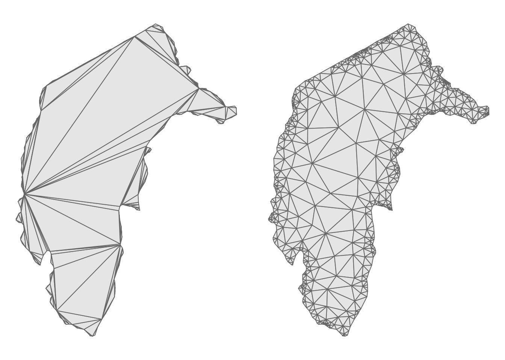
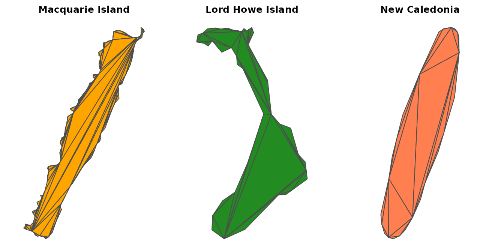

A polygon in wkpool is a set of rings, and a ring is a cycle of
segments: one-dimensional topology. Triangles are the two-dimensional
version, and they can live on the same vertex pool. A
wkpool_tri is a vector of triangles whose corners are
vertex ids into a pool, just as a wkpool is a vector of segments.
wkpool_tri and pool_triangulate() are
experimental (new in 0.4.0) and may change. The older
route, as_pslg() and pool_holes() feeding
RTriangle, is unchanged and is covered below alongside it.
Ear cutting
pool_triangulate() ear cuts each polygon with decido.
Ear cutting adds no vertices, so the triangles reference the pool’s
vertices as they are.
x <- wk::as_wkb(c(
"POLYGON ((0 0, 4 0, 4 4, 0 4, 0 0), (1 1, 1 3, 2 2, 3 3, 3 1, 1 1))",
"POLYGON ((4 0, 6 0, 6 4, 4 4, 4 0))"
))
pool <- establish_topology(x)
tri <- pool_triangulate(pool)
tri
#> <wkpool_tri[11 triangles, 16 vertices]>
#> [1] <triangle: 4,1,6> <triangle: 7,8,9> <triangle: 10,6,1>
#> [4] <triangle: 4,6,7> <triangle: 10,1,2> <triangle: 3,4,7>
#> [7] <triangle: 9,10,2> <triangle: 3,7,9> <triangle: 9,2,3>
#> [10] <triangle: 14,15,12> <triangle: 12,13,14>
pool_triangles(tri)
#> .vx0 .vx1 .vx2 .feature .part
#> 1 4 1 6 1 1
#> 2 7 8 9 1 1
#> 3 10 6 1 1 1
#> 4 4 6 7 1 1
#> 5 10 1 2 1 1
#> 6 3 4 7 1 1
#> 7 9 10 2 1 1
#> 8 3 7 9 1 1
#> 9 9 2 3 1 1
#> 10 14 15 12 2 2
#> 11 12 13 14 2 2
plot(tri, asp = 1)
Each triangle keeps the feature and part it came from, and triangles
are counter-clockwise. wk_handle() gives one POLYGON per
triangle, so any wk consumer can take them:
wk::as_wkt(tri)[1:3]
#> <wk_wkt[3]>
#> [1] POLYGON ((0 4, 0 0, 1 1, 0 4)) POLYGON ((1 3, 2 2, 3 3, 1 3))
#> [3] POLYGON ((3 1, 1 1, 0 0, 3 1))Triangulating a raw pool and merging later gives the same result as
merging first. After merging, the two features share the corners on
their common edge. tri_segments() gives the triangle edges
as an ordinary wkpool, so the segment tools apply; here the one edge the
features share, once from each side:
tri <- merge_coincident(tri)
edges <- tri_segments(tri)
find_shared_edges(edges)
#> edge_key .vx0 .vx1 .feature segment_idx features
#> 26 2-3 2 3 1 26 1, 2
#> 29 2-3 2 3 2 29 1, 2A real coverage
inlandwaters from silicate is six regions of Australia
(and New Caledonia) with many holes and long shared boundaries.
data("inlandwaters", package = "silicate")
# the geometry column as WKB, so sf is not needed
iw_geom <- wk::wk_handle(inlandwaters$geom, wk::wkb_writer())
iw <- merge_coincident(establish_topology(iw_geom))
iw_tri <- pool_triangulate(iw)
length(iw_tri)
#> [1] 33205
nrow(pool_vertices(iw_tri)) == nrow(pool_vertices(iw))
#> [1] TRUE
plot(iw_tri, border = NA, asp = 1, axes = FALSE, xlab = "", ylab = "")
plot() draws every triangle in one
polygon() call indexed into the pool, so tens of thousands
of triangles draw in well under a second.
The view is much bigger than the land. Three small, distant islands set the extent: Macquarie Island far to the south, which is one part of the Tasmania feature; Lord Howe Island to the east, one part of the New South Wales feature; and the feature labelled New Caledonia to the north east. Each triangle records its feature and part, so the islands can be found from the triangles themselves and dropped with a subset. The plot extent follows the triangles that are drawn:
tt <- pool_triangles(iw_tri)
ev <- pool_vertices(iw_tri)
tx <- ev$x[match(tt$.vx0, ev$.vx)]
ty <- ev$y[match(tt$.vx0, ev$.vx)]
prov <- inlandwaters$Province
nsw <- tt$.feature == which(prov == "New South Wales")
islands <- c(
"Macquarie Island" = tt$.part[which.min(ty)],
"Lord Howe Island" = tt$.part[nsw][which.max(tx[nsw])],
"New Caledonia" = unique(tt$.part[tt$.feature == which(prov == "New Caledonia")])
)
islands
#> Macquarie Island Lord Howe Island New Caledonia
#> 126 16 4
plot(iw_tri[!tt$.part %in% islands], border = NA, asp = 1, axes = FALSE,
xlab = "", ylab = "")
Constrained Delaunay: the PSLG route
Ear cutting gives valid triangles but they are often long and thin,
and it cannot add vertices. For good-quality triangles (minimum angle,
maximum area) you need a constrained Delaunay triangulation, and its
input is a planar straight line graph (PSLG): vertices, and segments
that must appear as triangle edges. A merged pool is already a PSLG;
as_pslg() just gives it as matrices, P for the
vertices and S for the segments, in the form RTriangle
uses.
p <- as_pslg(establish_topology(wk::as_wkb(
"POLYGON ((0 0, 4 0, 4 4, 0 4, 0 0), (1 1, 1 3, 2 2, 3 3, 3 1, 1 1))"
)))
str(p)
#> List of 2
#> $ P: num [1:9, 1:2] 0 4 4 0 1 1 2 3 3 0 ...
#> $ S: int [1:9, 1:2] 1 2 3 4 5 6 7 8 9 2 ...A PSLG does not say which side of a segment is inside. RTriangle
removes the triangles outside the outer boundary, and needs a point in
each hole to remove those too. pool_holes() gives one point
inside each hole ring (a hole that another polygon fills exactly, like
an enclave, is not a hole of the coverage and is left out):
h <- pool_holes(merge_coincident(establish_topology(wk::as_wkb(
"POLYGON ((0 0, 4 0, 4 4, 0 4, 0 0), (1 1, 1 3, 2 2, 3 3, 3 1, 1 1))"
))))
h
#> x y
#> [1,] 2 1.5
rt <- RTriangle::triangulate(RTriangle::pslg(P = p$P, S = p$S, H = h),
q = 30, a = 0.1)
plot(rt$P, asp = 1, pch = ".", xlab = "", ylab = "")
polygon(rt$P[t(cbind(rt$T, NA)), ], col = "grey90")
points(h, col = "firebrick", pch = 19)RTriangle added vertices to meet the quality and area targets; those are the Steiner points, appended after the input vertices.
Back to a triangle pool
The result is a vertex table and an index table, which is all a
wkpool_tri is. The input vertices come first in the same
order as the pool, so their ids are unchanged and Steiner points get new
ids after them:
v <- data.frame(.vx = seq_len(nrow(rt$P)), x = rt$P[, 1], y = rt$P[, 2])
rt_tri <- new_wkpool_tri(v, rt$T[, 1], rt$T[, 2], rt$T[, 3])
length(rt_tri)
#> [1] 208
rt_tri[1:3]
#> <wkpool_tri[3 triangles, 131 vertices]>
#> [1] <triangle: 72,51,49> <triangle: 106,103,105> <triangle: 47,19,17>On real data the difference in triangle quality is plain. The first
feature of inlandwaters is the Australian Capital
Territory: ear cut on the left, long thin triangles fanning from a few
vertices; through RTriangle with a minimum angle of 25 degrees on the
right, back on a triangle pool:
act <- iw_tri[pool_feature(iw_tri) == 1]
act_p <- as_pslg(establish_topology(iw_geom[1]))
act_rt <- RTriangle::triangulate(RTriangle::pslg(P = act_p$P, S = act_p$S),
q = 25)
act_v <- data.frame(.vx = seq_len(nrow(act_rt$P)),
x = act_rt$P[, 1], y = act_rt$P[, 2])
act_rt_tri <- new_wkpool_tri(act_v, act_rt$T[, 1], act_rt$T[, 2], act_rt$T[, 3])
c(earcut = length(act), RTriangle = length(act_rt_tri))
#> earcut RTriangle
#> 277 983
op <- par(mfrow = c(1, 2), mar = rep(0.5, 4))
plot(act, col = "grey90", border = "grey40", asp = 1, axes = FALSE,
xlab = "", ylab = "")
plot(act_rt_tri, col = "grey90", border = "grey40", asp = 1, axes = FALSE,
xlab = "", ylab = "")
par(op)The PSLG route triangulates the whole pool at once and does not
record which feature a triangle belongs to;
pool_triangulate() does, because it works one polygon at a
time.
On inlandwaters RTriangle covers the same area as ear
cutting, up to one thing a PSLG cannot express with hole points alone: a
region enclosed by neighbouring polygons that none of them covers is not
a hole of any ring, so pool_holes() gives no point for it
and RTriangle keeps it.
tri_area <- function(P, T) {
sum(abs((P[T[, 2], 1] - P[T[, 1], 1]) * (P[T[, 3], 2] - P[T[, 1], 2]) -
(P[T[, 3], 1] - P[T[, 1], 1]) * (P[T[, 2], 2] - P[T[, 1], 2]))) / 2
}
iw_p <- as_pslg(iw)
iw_rt <- RTriangle::triangulate(
RTriangle::pslg(P = iw_p$P, S = iw_p$S, H = pool_holes(iw))
)
ev <- pool_vertices(iw_tri)
c(
earcut = tri_area(cbind(ev$x, ev$y), as.matrix(pool_triangles(iw_tri)[1:3])),
RTriangle = tri_area(iw_rt$P, iw_rt$T)
) / 1e6
#> earcut RTriangle
#> 1923706 1923944The islands
The three islands, each drawn from its own subset of the triangle pool:
op <- par(mfrow = c(1, 3), mar = c(0.5, 0.5, 2, 0.5))
for (nm in names(islands)) {
plot(iw_tri[tt$.part == islands[nm]], border = "grey30", asp = 1,
axes = FALSE, xlab = "", ylab = "", main = nm)
}
par(op)A few things to notice:
-
A subset is a set of triangles, not a copy of the coordinates: each island still references the full vertex pool, and its vertex ids are the ids in the whole coverage.
mq <- iw_tri[tt$.part == islands["Macquarie Island"]] c(triangles = length(mq), pool_vertices = nrow(pool_vertices(mq))) #> triangles pool_vertices #> 174 30835 -
Ear cutting adds no vertices, so the count is fixed by the input: a polygon with
nvertices andhholes givesn + 2h - 2triangles. These islands have no holes, so each has two fewer triangles than vertices: The islands are a few kilometres to a few tens of kilometres across, the mainland states around a thousand. A maximum triangle area (
ain RTriangle) is in map units, square metres here, so one value refines a small island and a large state very differently; a minimum angle (q) does not depend on scale.
Which engine
| Engine | Adds vertices | Keeps feature | Holes from |
|---|---|---|---|
pool_triangulate() (decido) |
no | yes | ring roles |
RTriangle via as_pslg()
|
yes (quality, area) | no |
pool_holes() points |
meshcore offers
further constrained Delaunay engines behind tri_mesh(),
with vertex origin (input, crossing, Steiner) and depth recorded in its
mesh tables.